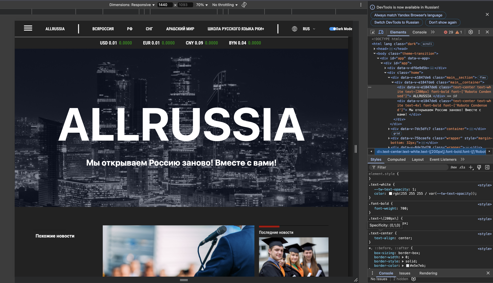
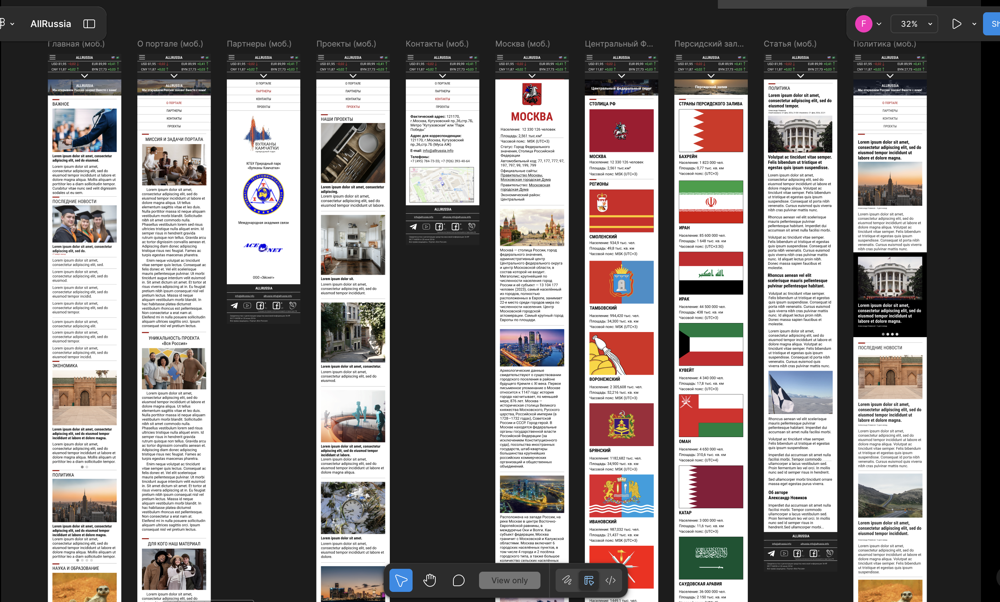
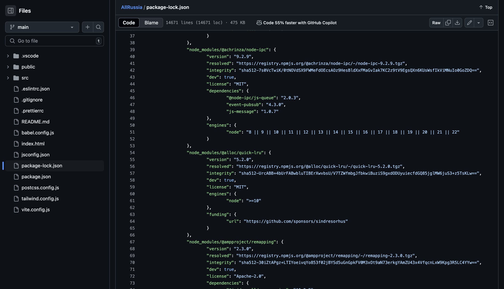

О проекте AllRussia.info
AllRussia.info — это международный новостной портал, созданный в рамках проектной деятельности студентов Московского Политеха. Его главная цель — обеспечить зарубежную аудиторию, прежде всего в арабском регионе, достоверной и объективной информацией о событиях в России.
Проект направлен на преодоление информационного разрыва между регионами, способствует формированию более точного восприятия российской действительности за рубежом и расширяет возможности для межкультурного общения.
Команда проекта разработала функциональный новостной сайт с многоязычной поддержкой, разделами по ключевым темам, а также с адаптацией под интересы зарубежных пользователей. Работа включала дизайн, разработку и постоянное взаимодействие с заказчиком.
Структра проекта
Проект AllRussia.info разделён на три ключевых направления, за каждое из которых отвечает отдельный тим-лид:
- Frontend: создание интерфейса, взаимодействие с пользователем.
- Дизайн: визуальная часть сайта, UX/UI и адаптация под устройства.
- Backend: логика работы, серверная часть, работа с данными.
Frontend
Дизайн
Backend
